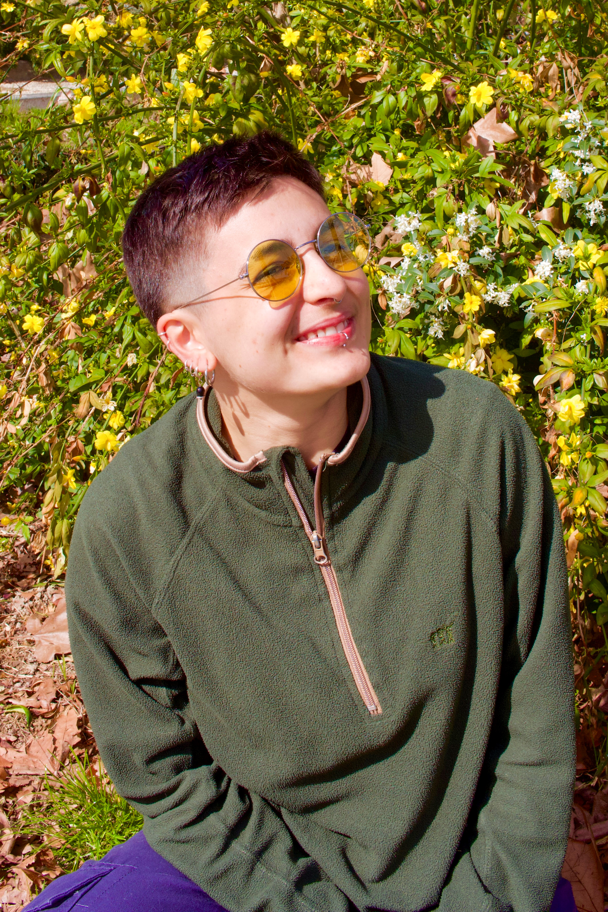
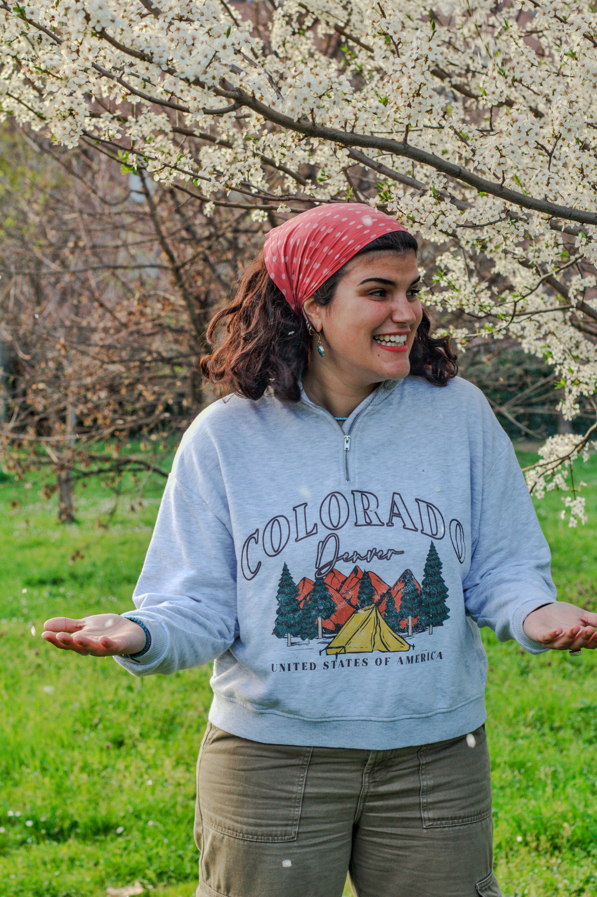
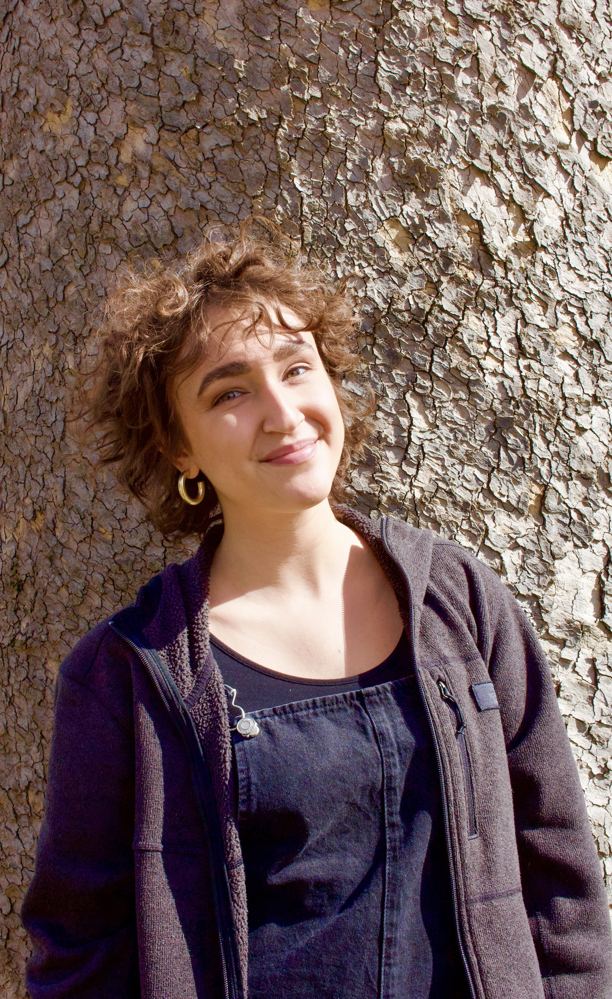
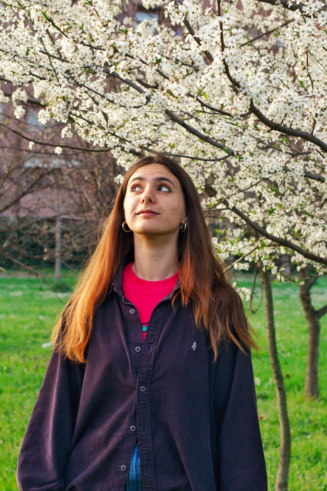
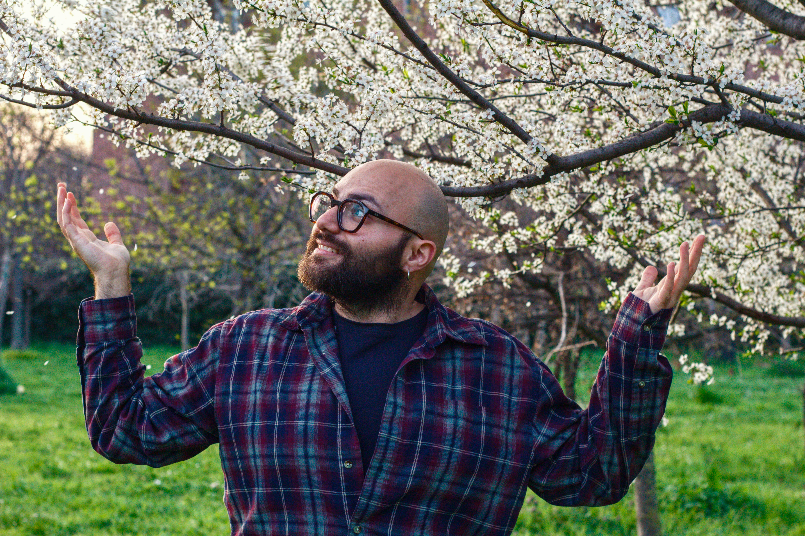
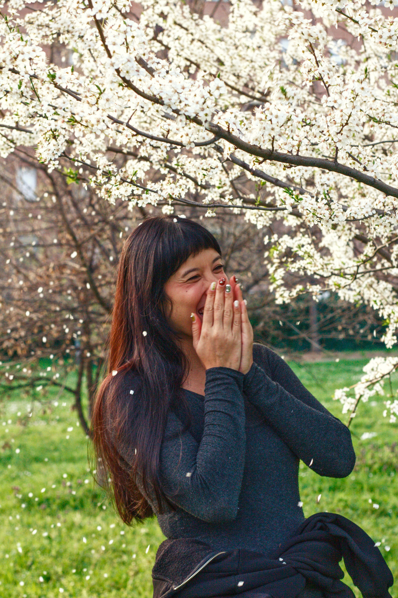

Il Nostro Team
Un collettivə multidisciplinare di giovanə, creativə, artistə e facilitatorə che lavorano insieme per trasformare gli spazi urbani e costruire comunità inclusive attraverso l'arte, la natura e la co-creazione.

Kat
Formatə al DAMS e nelle Arti Visive, porta avanti progetti artistici e laboratori di collage e linoleografia. Nel progetto favorirà il dialogo tra la comunità di Salus Space e il territorio, contribuendo anche alla realizzazione delle attività artistiche. Si caratterizza per creatività, capacità espressive e forte predisposizione al lavoro comunitario.

Sara
Laureata in Scienze sociali per lo sviluppo, la cooperazione e la pace e studentessa magistrale in Sviluppo locale e politiche di Welfare, ha lavorato come educatrice e nei servizi di accoglienza. Nel progetto si occuperà di comunicazione digitale, facilitazione dei gruppi e mediazione interculturale. Le sue principali qualità sono la sensibilità sociale, le competenze comunicative e l'approccio inclusivo.

Beatrice
Laureata in Sociologia e Antropologia, con un Master in African Studies e un percorso di dottorato in Sociologia e ricerca sociale, lavora nell'ambito dell'accoglienza e dell'insegnamento dell'italiano a persone straniere. Nel progetto sosterrà i processi di inclusione e l'incontro tra abitanti e persone con background migratorio. Le sue qualità principali sono la competenza sui temi sociali, l'impegno civico e la capacità di mediazione interculturale.

Laura
Laureata in Storia e studentessa magistrale in Antropologia, ha maturato esperienza nel teatro sociale e nella conduzione di laboratori per bambin* e famiglie. Nel progetto curerà le attività teatrali e laboratoriali e il coinvolgimento delle realtà del territorio. Si distingue per le capacità relazionali, l'attitudine alla costruzione di comunità e la profonda conoscenza del quartiere.

Mirko
Laureato in Servizio sociale e in Sociologia e ricerca sociale, lavora come assistente sociale e ha maturato esperienza educativa nelle scuole. Nel progetto contribuirà all'analisi dei bisogni del territorio, alla mediazione tra i diversi attori coinvolti e alla scrittura creativa. Si distingue per capacità di ascolto, approccio analitico e competenze nella gestione delle relazioni sociali.

Margherita
Laureata in Lettere moderne, affianca gli studi in Italianistica e Scienze della formazione primaria al lavoro di educatrice scolastica. Nel progetto promuoverà percorsi partecipativi attraverso racconti, fotografie, disegni e attività laboratoriali. Le sue qualità sono la sensibilità educativa, la capacità di ascolto e l'attenzione alla valorizzazione delle storie e delle memorie collettive.
I Nostri Partner
Collettiva Rampicante è sostenuta da istituzioni europee ed italiane impegnate nel volontariato, la solidarietà e l'inclusione sociale.
Corpo Europeo di Solidarietà
Programma europeo che promuove il volontariato e la solidarietà tra i giovani europei.
SALUS Space
Spazio di coworking e comunità a Bologna che ospita i nostri laboratori creativi.
Comune di Bologna
Istituzione locale che supporta il nostro progetto di rigenerazione urbana e inclusione sociale.